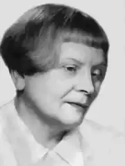
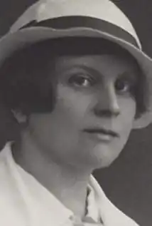

Домбровська Марія (Dabrowska, Maria — 06.10. 1889, Руссов —19.05.1965, Варшава) — польська письменниця.Домбровська (у дівоцтві — Шумська) народилася в селі Руссов Каліського воєводства. Її батьки були вихідцями із зубожілих шляхетських сімей. Батько служив управителем поміщицького маєтку, а мати до одруження вчителювала в одному із варшавських пансіонів. Спочатку Домбровська навчалась у приватній школі у Варшаві, а з 1907 року — в університетах Лозанни, Брюсселя, Діжона. У 1911 р. вона отримала вчену ступінь кандидата природничих наук. У роки, проведені за кордоном, Домбровська зблизилася з колами прогресивної польської еміграції, брала активну участь у їхній роботі. Близькість до цих кіл, а також знайомство з Маріаном Домбровським — діячем соціалістичного руху й учасником революції 1905 p., який в 1911р. став її чоловіком, справили значний вплив на формування поглядів майбутньої письменниці.
Свою літературну діяльність Домбровська розпочала з публіцистики. Починаючи з 1910 p., вона публікувала в різних польських газетах та журналах публіцистичні статті на злободенні теми. Домбровська пізніше згадувала, що навмисне відмовлялась на початку своєї літературної кар'єри від написання художніх творів, оскільки в той час більш актуальним завданням вона вважала підтримку "освіти та культури широких народних мас" з тим, аби вони "змогли взяти участь у справі відродження Польщі".
Після 1918 p., коли Польща здобула незалежність, Домбровська 6 років (по 1924 р.) працювала в міністерстві сільського господарства, завідувала бібліотекою і відділом видавничої інформації.Перші літературно-художні твори Домбровської були споріднені за своїм ідейним духом з її публіцистикою. Вони мали соціально-виховну спрямованість і адресувалися молоді. Зазвичай це були короткі оповідання, присвячені історичному минулому Польщі, національним героям, письменникам, художникам, а також різним повчальним випадкам із життя. Опубліковані в різних журналах, у 1921 р. вони були видані окремою збіркою "Діти вітчизни" ("Dzieci ojczyzny", 1921). Оповідання збірки — це своєрідні "історичні картинки" або коротенькі замальовки, які мають яскраво виражений патріотичний зміст і дидактичний характер. У 1922 р. вийшла друком нова збірка оповідань "Гілка черешні" ("Galaz czeresni"), у яких ставилися злободенні соціальні питання. Як і попередня, збірка була пронизана дидактичним пафосом. У 1923 р. з'явилася книжка "Усмішка дитинства" ("Usmiech dziecinstwa"). Цю книжку Домбровська вважала своїм "першим художнім твором". В оповіданнях збірки письменниця відтворює свої дитячі враження і розповідає про життя дітей. У 1925 р. за "Усмішку дитинства" Домбровську нагородили Премією видавців. Наступна збірка оповідань "Люди звідусіль" ("Ludzic stamtad") з'явилась у 1926 р. Як і попередня збірка, вона написана на основі спогадів письменниці про своє дитинство, але цього разу розповідає не про дітей, а про життя дорослих. Ця книжка також була знаменною для письменниці. Як вважала Домбровська, вона ввела її в літературу. І дійсно, нова збірка Домбровської відразу привернула до себе увагу польських читачів та критики. У ній Домбровська розповіла про страждання, біди та радощі польських селян — "сільських пролетарці", як вона сама їх називала. У 30-х pp. Домбровська знову виступила з рядом публіцистичних статей, в яких висловила гірке розчарування політикою Пілсудського, рішуче виступила проти порушення законності та переслідувань за політичні переконання. На знак протесту проти політики уряду, вона спочатку відмовилася від звання "Золотого лауреата" Польської академії літератури, яке їй присудили в 1934 p., а потім від численних пропозицій стати членом Академії літератури. У 30-х pp. почали виходити перші частини вершинного твору Домбровської, її роману-епопеї "Ночі і дні" ("Noce і dnie"). Романну тетралогію "Ночі і дні" Домбровська писала упродовж 1926—1934 pp. і складається вона з 4 романів: "Богумил і Барбара", "Вічні клопоти", "Кохання", "Вітер у вічі". Первісний задум роману мав яскраво виражений філософський характер, що підкреслювала і його початкова назва — "Серед життя і смерті". У своєму щоденнику від 8 березня 1928 р. Домбровська так сформулювала його провідну ідею; "Я хочу змалювати в циклі "Серед життя і смерті "родину, яка втрачає усі матеріальні блага, але набуває духовні". Пізніше Домбровська відмовилася від цієї назви і дала іншу — "Ночі і дні". Цією новою назвою вона немовби акцентує увагу на основному предметі зображення, а саме — життя у його найзвичайнішій і повсякденній буденності, життя без вигадки, без прикрас. Означуючи пафос повсякденності і буденності, що пронизують роман, Домбровська виходить з переконання, що "кожен, навіть найзвичайнісінький момент життя, є важливим, що саме хвилини буденності... складають зміст і значення буття окремої особистості в загальній сумі елементів суспільного життя". "Коли я почала писати, — занотувала Домбровська у роки праці над романом, — я хотіла з'ясувати, звідки вийшло і до яких поразок та перемог... йде моє покоління, моє суспільне середовище". Роман Домбровської не зосереджується винятково на історичній долі шляхти. Процес її занепаду та переродження представлений в романі на максимально широкому тлі суспільно-політичного життя Польщі. У романі більшою або меншою мірою простежуються усі економічні та політичні зрушення, рушійні сили та ідейні орієнтири розвитку польського суспільства впродовж його півстолітнього розвитку. Тут представлені майже всі соціальні прошарки тогочасної Польщі: фільваркові робітники і батраки, управителі та адміністратори маєтків багатих поміщиків, патріотично налаштована інтелігенція та політична еміграція, підприємницький клас (усього понад сто персонажів). Домбровська докладно показує соціальний та ідейно-політичний рух у Польщі та в еміграції, революцію 1905 року, ідейні дискусії серед представників різних напрямів національно-визвольного руху. У романі зображений занепад ідеалів "політичного романтизму", захоплення ідеологією варшавського позитивізму, розвиток соціалістичних ідей та ідей кооперативного руху. Увесь цей широкий спектр питань та проблем подається через призму повсякденного життя його героїв, через їхні оцінки, роздуми, мрії, буденні радощі та розчарування. За типом фабульної побудови роман Домбровської належить до таких відомих в західноєвропейській літературі зразків роману, в яких простежується життя кількох поколінь однієї родини ("Сага про Форсайтів" Дж. Голсуорсі, "Будденброки" Т. Манна та ін.). У романі Домбровської простежується доля трьох поколінь однієї родини — родини Нехціців, починаючи від повстання 1863 року до початку Першої світової війни. У центрі зображення — середнє, або друге, покоління Нехціців, зокрема життєві долі і подружнє життя Богуміла Нехциця та його дружини Барбари Нехциць — до заміжжя Остшенської. Доля першого покоління Нехціців та Остшенських подається як передісторія у пролозі до першого роману тетралогії "Богуміл і Барбара". Третє покоління Нехціців в особі їхніх дітей — Томашека, Емільки і, особливо, — Агнешки — активно починає простежуватися з третього тому тетралогії "Кохання". У романі відчутні автобіографічні мотиви. Так, прообразами головних героїв тетралогії Богуміла та Барбари були батьки Домбровської, а життєва доля їхньої доньки Агнешки дуже схожа на долю самої письменниці. Наприкінці 30-х років Домбровська звернулася до драматургії. У 1939 році вона створила драму "Геній-сирота" ("Geniusz sierocy"). В цій драмі письменниця звернулася до подій польської історії XVII ст. і, зокрема, до історичної постаті короля Владислава IV. У його образі Домбровська спостерегла риси "національного генія". Король робить безуспішну спробу зміцнити польську державу, в якій панує політична анархія. У шляхетському середовищі, яке його оточує, він виглядає сиротою. Його плани, не підтримані його оточенням, зазнають краху, а подальша історія Польщі стає історією її занепаду. Драма "Геній-сирота" пронизана патріотичним пафосом. У передмові до одного з видань драми Домбровська писала, що ідея її написання з'явилась у неї в грудні 1938 року після того, як вона в черговий раз перечитувала "Вогнем і мечем" Г. Сенкевича. На відміну від Сенкевича, Домбровська критикує заскорузлість шляхти, вважає, що нею завжди керували лише особисті інтереси, а не національний патріотизм. У роки війни, за винятком кількох короткочасних поїздок до родичів, Домбровська проживала в окупованій німцями Варшаві. Умови її життя були важкими. Незважаючи на це, вона допомагала молодшій сестрі та родині хворого брата, у якого було двоє дітей. Матеріальну підтримку їй самій надавало у ці роки кооперативне товариство "Сполем", з яким вона була пов'язана ще з років юності. Під час окупації Домбровська писала статті у підпільну газету "Польща бореться", виступала з доповідями перед слухачами підпільних навчальних закладів, допомагала у конспіративній роботі учасникам польського антифашистського опору. Під час Варшавського повстання вона допомагала персоналу Публічної бібліотеки евакуювати книгосховище, під час гасіння пожежі зламала руку. У цьому повстанні Домбровська втратила свою улюблену молодшу сестру Ядвігу, котра була учасницею антифашистського опору. Після поразки повстання Домбровська була змушена залишити Варшаву. Близько чотирьох місяців вона жила в сільськогосподарській школі в Домброві Здуньській, а після звільнення Варшави повернулась у столицю.У 1945 р. Домбровська створила другу й останню у своїй творчості драму "Станіслав і Богуміл" ("Stanislaw і Bogumil"). Ця драма є своєрідним підсумком роздумів Домбровської над трагічною долею Польщі і причинами її поразки у 1939 р. Але в самій п'єсі змальовуються не сучасні події, а далека польська історія. Письменниця звернулася до подій XI ст., — боротьби польського короля Болеслава Хороброго проти посягань з боку німців. Домбровська з гіркотою показує у драмі, що король Болеслав програв війну з німцями через інтриги та зраду його оточення. Головний герой драми, король Болеслав, зображений як розумна і справедлива людина, як правитель, думки якого спрямовані на зміцнення Польщі в ім'я її свободи та захисту від посягань німецького імператора.